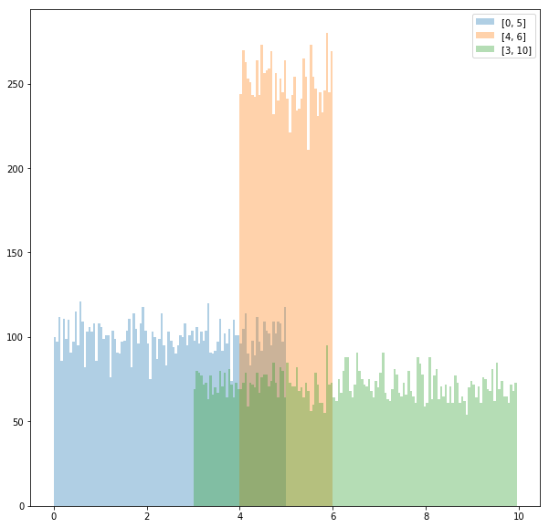
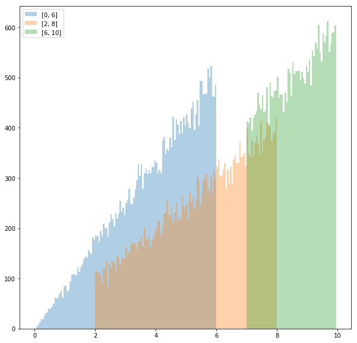
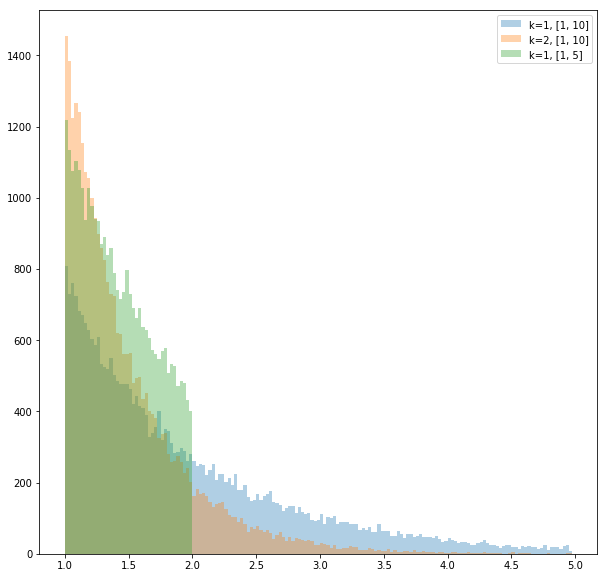

逆関数法
ある分布が与えられたときにその分布に従う乱数を生成することを考える。
理論
事実
確率分布\(X\)が確率密度関数\({\it pdf }(x)\)で与えられたとする。
つまり、\(X\)から変数をランダムにとったとき\(x\)が選ばれる確率は\({\it pdf} (x)\)に比例し、かつ \[ \int_{-\infty}^{\infty} {\it pdf }(x) dx = 1 \] が成り立つとする。
この仮定のもとで、\({\it pdf}(x)\)の累積分布関数(commulative distribution function)を \[ {\it cdf}(x) = \int_{-\infty}^{x} {\it pdf }(x) dx \] とする。
このとき、\(x\)を\([0, 1]\)の一様分布からとった変数とすると、\({\it cdf}^{-1}(x)\)は\(P\)に従う。 言い換えると、\(Y\)を\([0, 1]\)の一様分布としたとき、\(X \sim {\it cdf}^{-1}(Y)\)が成り立つ。
証明
\(x\)を\([0, 1]\)の一様分布からとった変数とすると、任意の\(a \in [0, 1]\)に対して \[ P(x \le a) = a \] である。
よって、与えられた\({\it pdf}(x)\)から計算した\({\it cdf}(x)\)について、 \[ P({\it cdf}^{-1}(x) \le {\it cdf}^{-1}(a)) = a \] が成り立つ。
\({\it cdf}^{-1}(a) = y\)とすると、\(a = {\it cdf}(y)\)でもあるから \[ P({\it cdf}^{-1}(x) \le y) = {\it cdf}(y) \] となる。
\(\therefore\) \({\it cdf}^{-1}(x)\)は累積分布関数が\({\it cdf}\)であるような分布、すなわち\(X\)に従う。 \(\Box\)
(私は確率論をきちんと学んでいないので、この証明がどれぐらい正しいのか知らない。)
Physically Based Rendering, Third Edition の 753-754ページには、離散分布を使った直感的でわかりやすい説明が載っていた。
実装
pythonでは random.random() を使うと \([0,1]\) の一様分布が得られるので、上で示した方法を使えば様々な分布に従う乱数を生成できる。実際にやってみる。
# モジュールのインポート
%matplotlib inline
import random
from math import sin, cos, exp, log
import numpy as np
import matplotlib.pyplot as plt
一様分布
\([a, b]\)の一様分布では \({\it pdf}(x)\) は (\(x \in [a,b]\) で)一定となる。
\({\it pdf}(x)\)の定義から\( \int_{a}^{b} {\it pdf}(x) dx = 1\)が成り立つので \[ {\it pdf}(x) = \frac{1}{b-a} \] となる。(本当は\(x \notin [a, b]\)のときも考えなくてはいけないが、 \({\it pdf}(x)=0\)であり \({\it cdf}(x)\)の形も自明なので省略することにする。以降の例でも同様。)
これから、 \[ {\it cdf}(x) = \int_{-\infty}^{x} {\it pdf}(x) dx = \frac{x-a}{b-a} \] \[ \therefore {\it cdf}^{-1} (x) = (b-a)x + a \] となる。
これをコードにすると、以下のようになる。
# [0, 1]の一様乱数を入力すると[a, b]の一様乱数を出力する関数を返す
def RNG_uniform(a, b):
def cdf_inv(x):
return (b - a) * x + a
return cdf_inv
グラフにプロットすれば、本当に関数の出力が一様乱数か確認できる。
fig, ax = plt.subplots(figsize=(10, 10))
bins = list(np.arange(0, 10, 0.05))
# a, bの値を変えて3つ描画する
ax.hist([RNG_uniform(0, 5)(random.random()) for _ in range(30000)], bins=bins, alpha=0.35, label="[0, 5]")
ax.hist([RNG_uniform(4, 6)(random.random()) for _ in range(30000)], bins=bins, alpha=0.35, label="[4, 6]")
ax.hist([RNG_uniform(3, 10)(random.random()) for _ in range(30000)], bins=bins, alpha=0.35, label="[3, 10]")
ax.legend()
fig

\({\it pdf}(x)\) が \(x\) に比例する分布
これはどのような分布かというと、変数 \(x\) を取ったとき\(x\) が \([0,1]\) に含まれる確率は \([1,2]\) に含まれる確率の半分となる分布である。
このような分布で、変数の範囲が \([a, b]\)であるものを考える。
\({\it pdf}(x) = cx\) とすると、\({\it pdf}(x)\) の条件 \[\int_{-\infty}^{\infty} {\it pdf }(x) dx = 1\] から、 \[\int_{a}^{b} cx dx = \frac{c}{2} (b^{2} - a^{2}) = 1\] \[\therefore c = \frac{2}{b^{2} - a^{2}}\]
よって
\begin{align} {\it cdf}(x) & = \int_{-\infty}^{x} {\it pdf}(x) dx \\ & = \int_{a}^{x} \frac{2x}{b^{2} - a^{2}} dx \\ & = \frac{x^{2} - a^{2}}{b^{2} - a^{2}} \end{align}これより \[ {\it cdf}^{-1}(x) = \sqrt{(b^{2} - a^{2}) x + b^{2}} \]
これをコードにすると以下のようになる。
# [0, 1]の一様乱数を入力するとpdf(x)=cx (a < x < b) な乱数を返す関数を返す
def RNG_linear(a, b):
def func(x):
return ((b**2 - a**2)*x + a**2)**0.5
return func
同様にグラフにする。
fig, ax = plt.subplots(figsize=(10, 10))
bins = list(np.arange(0, 10, 0.05))
# a, bの値を変えて3つ描画する
ax.hist([RNG_linear(0, 6)(random.random()) for _ in range(30000)], bins=bins, alpha=0.35, label="[0, 6]")
ax.hist([RNG_linear(2, 8)(random.random()) for _ in range(30000)], bins=bins, alpha=0.35, label="[2, 8]")
ax.hist([RNG_linear(7, 10)(random.random()) for _ in range(30000)], bins=bins, alpha=0.35, label="[7, 10]")
ax.legend()
fig

ここまでの二つの例における \({\it cdf}^{-1}(x)\)の形を見比べればわかるとおり、これらの考え方は\({\it pdf}(x) = cx^{n}\) の場合に一般化することができる。
指数分布
\({\it pdf}(x) = ce^{-kx}\) で、変数の範囲が \([a, b]\) とする。
\({\it pdf}(x)\)の条件から \[\int_{a}^{b} ce^{-kx} dx = \frac{c}{k} (e^{-ka} - e^{-kb}) = 1\] \[\therefore c = \frac{k}{e^{-ka}-e^{-kb}}\] よって
\begin{align} {\it cdf}(x) & = \int_{a}^{x} \frac{k}{(e^{-ka} - e^{-kb})}e^{-kx} dx \\ & = \frac{e^{-ka}-e^{-kx}}{e^{-ka} - e^{-kb}} \end{align}\[\therefore {\it cdf}^{-1}(x) = - \frac{\log(e^{-ka} - (e^{-ka} - e^{-kb})x)}{k}\]
コードは
# [0, 1]の一様乱数を入力するとpdf(x)=ce^(-kx) (a < x < b) な乱数を返す関数を返す
def RNG_exp(k, a, b):
def func(x):
return -log(exp(-k*a) - x*(exp(-k*a) - exp(-k*b))) / k
return func
グラフは
fig, ax = plt.subplots(figsize=(10, 10))
bins = list(np.arange(1, 5, 0.025))
# k, a, bの値を変えて3つ描画する
ax.hist([RNG_exp(1, 1, 10)(random.random()) for _ in range(30000)], bins=bins, alpha=0.35, label="k=1, [1, 10]")
ax.hist([RNG_exp(2, 1, 10)(random.random()) for _ in range(30000)], bins=bins, alpha=0.35, label="k=2, [1, 10]")
ax.hist([RNG_exp(1, 1, 2)(random.random()) for _ in range(30000)], bins=bins, alpha=0.35, label="k=1, [1, 5]")
ax.legend()
fig

なお前の式で\(k=1\), \(b = \infty\) とすると \[{\it cdf}^{-1}(x) = a \log(1-x)\] となってかなり簡単になる。
その他
逆関数法を使って乱数が求められる分布は他にもあるが省略。
逆関数法を使わないでも乱数が求められる分布もある。
例えば、 \(X_{1}, \dots , X_{n}\) を \([a, b]\) の一様分布に従う変数としたとき \[ X = max(X_{1}, \dots, X_{n})\] とすると、 \(X\) は \({\it pdf(x) = cx^{n}}\) かつ \(X \in [a, b]\) な分布に従う。
このことは
\begin{align} P(X = x) & = P(x_{1} \leq x \land , \dots , \land x_{n} \leq x) \\ & = \prod_{i=1}^{n} P(x_{i} \leq x) & (\because x_{i} は独立) \\ & \sim \prod_{i=1}^{n} x & (\because x_{i}は一様分布に従う) \\ & = x^{n} \end{align}からわかる。
逆関数法を使わないで乱数を求める他の方法として、ボックスミュラー法がある。
参考文献
Physically Based Rendering, Third Edition, Chapter13 "Monte Carlo Integration"
Ray Tracing: The Rest Of Your Life (Ray Tracing Minibooks Book 3), Chapter2 "One Dimentional MC Integral"